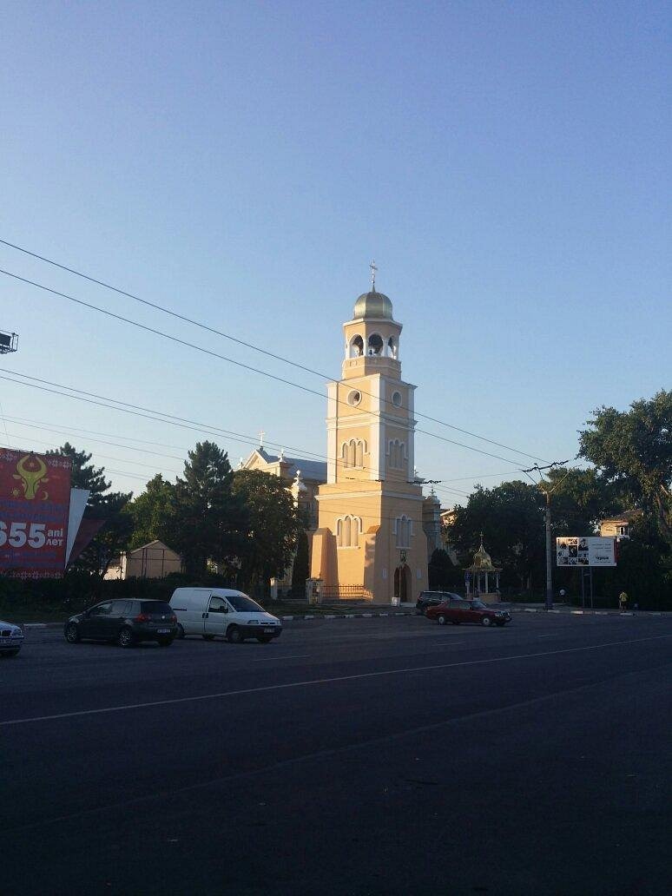

Интерестные места
Кафедральный собор Константина и Елены

В 1923 году северная часть Бессарабии была включена в состав Хотинской епархии Румынской православной церкви с резиденцией в Бельцах, а её главой был назначен епископ Виссарион. Осенью того же года ему удалось достичь выделения в городской черте участка земли площадью почти 7595 м² для строительства кафедрального собора. Первоначально планировалось возведение храма в соответствии с проектом астраханского Успенского кафедрального собора, однако бухарестский зодчий Адриан Габрилеску несколько видоизменил его. На торжественную церемонию заложения фундамента были приглашены сын румынского короля Фердинанда наследный принц Кароль, Патриарх Иерусалимский Дамиан, члены Священного Синода и прочие должностные лица. 28 октября 1924 года на месте будущего алтаря священнослужителями был установлен крест, а в фундамент была помещена капсула со свитком — актом основания церкви.
Собор Святого Николая
это православный храм, который расположен в городе Бельцы в Молдавии. Храм был основан в 1836 году и является одним из наиболее значимых исторических и религиозных мест в Молдавии. Собор был построен в стиле русского барокко и является прекрасным примером архитектуры того времени. В храме находится множество ценных икон и других религиозных артефактов, которые привлекают множество паломников и туристов. В храме также проводятся богослужения и другие религиозные мероприятия, а также культурные и общественные мероприятия. Бельцкий Собор Святого Николая является важным символом православной веры в Молдавии и одним из главных достопримечательностей города Бельцы.
Танк Т-34,

В исторической справке советского времени, хранящейся в Музее истории и этнографии, об этом рассказывается следующее: «Готовясь к 25-летию освобождения родного города от фашистского ига, красные следопыты и педагоги 12-й средней школы начали изучение боёв за город, организовали несколько походов по местам боевой славы войск 2-й танковой и 52-й армии, освободивших г. Бельцы и северные районы Молдавии.